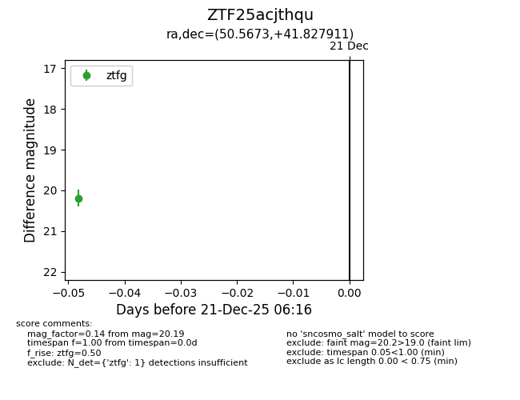
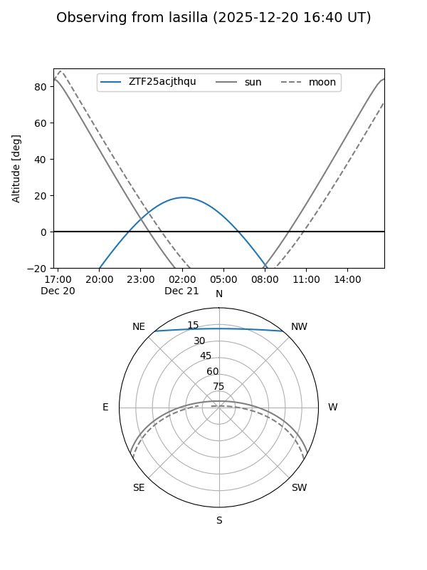
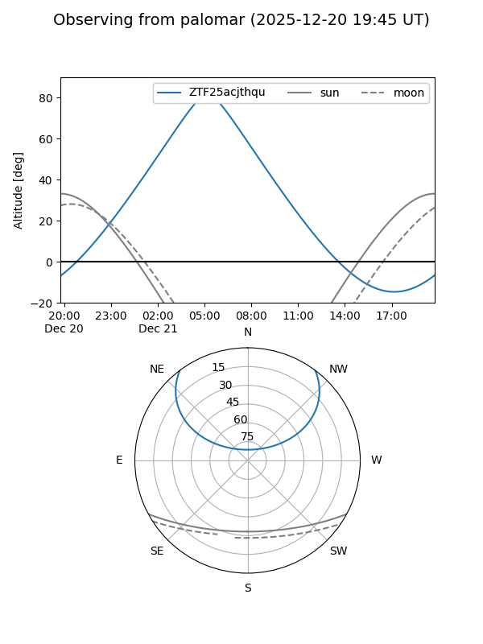

ZTF25acjthqu
Target ZTF25acjthqu at 2025-12-21 06:18
Aliases and brokers:
FINK: fink-portal.org/ZTF25acjthqu
Lasair: lasair-ztf.lsst.ac.uk/objects/ZTF25acjthqu
ALeRCE: alerce.online/object/ZTF25acjthqu
alt names
ZTF25acjthqu (ztf,fink_ztf)
Coordinates:
equatorial (ra, dec) = 50.5673,+41.82791
equatorial (HMS+DMS) = 03:22:16.16,+41:49:40.48
galactic (l, b) = (150.7891,-12.74257)
Flags:
Photometry:
last ztfg=20.19
1 ztfg detections
Lightcurve

Visibility


Additional plots